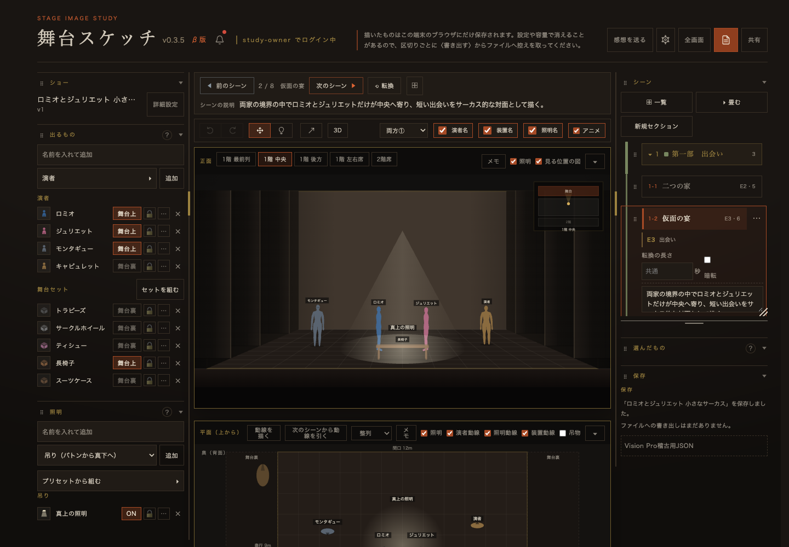
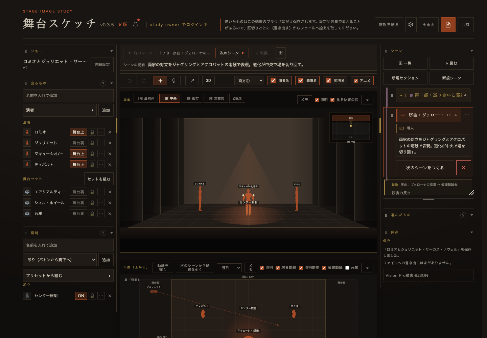

舞台スケッチ／AI作成マニュアル P4 ／ 作成 2026-09-11 ／ 設計: Claude Fable 5.1 ／ 根拠: 本番P2 5本＋模擬2本の実測 ／ 状態: 本人判断待ち
P4 判断 — AI生成JSONの「黙った変形」を、どこで・どの強さで止めるか
P2 で分かったこと: 外部AI（ChatGPT・Claude.ai・Gemini）が作ったJSONは、5本中5本が舞台スケッチで「開けた」。しかし5本中2本は、開けたまま意図と違う図になった（参照切れ→別人物、色の書式ミス→全員が既定色）。ブラウザは警告を出さない。開発用の検査器 tools/ai-json-check.mjs なら一発で捕まり、その出力をAIに貼れば1回で直った。問題は、一般ユーザーは検査器を使えないこと。
判断してほしいこと（4件）
- P4-1 点検をどこに置くか。
(A) アプリの読み込み比較画面に「点検結果」を追加（正規化の前に生JSONを検査）
(B) 公開ページに独立の「AI JSON点検」ページ（ブラウザ内で完結。JSONを選ぶと結果と修正依頼文が出る。アプリ本体は変更しない）
(C) Bを先に出し、Aは後で。推奨: C。理由: 本体
stage-sketch.jsは別セッションが編集中（光の動きスケッチ）で、いま触ると衝突する。Bは本体非改変で今夜 Codex に出せ、P3 の公開ページに同居できる。 - P4-2 点検の強さ。 (A) 警告だけ（読み込みは通す） (B) 警告＋「AIに貼る修正依頼文をコピー」ボタン (C) 参照切れ・色書式はブロック。推奨: B。理由: P2 で「NG本文をそのまま貼る→1回で修正」が3AI全部で成立した。ブロックすると既存ユーザーの手書きJSONや古い書き出しまで止める恐れがある。
- P4-3 検査の正本を一つにするか。
(A)
tools/ai-json-check.mjsの判定関数を ESM に切り出し、node（開発）とブラウザ（公開ページ）で同じ関数を使う。enum（姿勢46・種類27・会場と規模）はビルド時にstage-sketch.jsから抽出して埋め込む (B) 公開ページ用に別実装。推奨: A。理由: 二重実装は必ず食い違う（P0 で契約書とコードが食い違った実例）。 - P4-4 点検項目の範囲（初版）。 (A) 「黙った変形」を起こす4点だけ: 参照切れ／色の書式／会場と規模の不一致／未知の姿勢・種類 (B) 検査器と同じ全項目（構文・外枠・未知キー・上限・安全注記・任意項目の追加…）。推奨: B（全項目）。理由: 判定関数を共有するなら範囲を狭める理由がない。表示は「図が変わる」「読み込みは通るが規約違反」の2段に分けて出す。
証拠（実測・2026-09-11）
| AI | 課題 | 初回の検査器 | そのまま読み込むと | NG本文を貼った後 |
|---|---|---|---|---|
| ChatGPT 無料 | 1 欠落入力 | NG 6件（castId の綴り違い cast-capulete） | 黙った変形キャピュレットが舞台裏扱い、名無しの「演者」が舞台上に出る | 1回で修正・全合格 |
| ChatGPT 無料 | 2 全指定 | OK | 全合格 | — |
| Claude.ai Sonnet 5 | 1 欠落入力 | OK | 全合格 | — |
| Gemini Flash | 1 欠落入力 | NG 39件（全 color の先頭に空白、安全注記2件） | 黙った変形演者4人・セット4つが全部既定色（演者は全員 #a84b26） | 1回で修正・全合格 |
| Gemini Flash | 2 全指定 | OK | 全合格 | — |


生成物は p2-runs/（NG版と修正版を両方保存）。台帳は P2_LEDGER.md。
案の比較
| 観点 | A 読み込み画面に点検 | B 独立の点検ページ | C B先行→A後追い（推奨） |
|---|---|---|---|
| 本体の変更 | あり（比較モーダルに節を追加）。別セッションの編集と衝突しうる | なし | Bはなし。Aは光の動きスケッチの M4 完了後 |
| ユーザーの手数 | 最少（読み込み時に自動） | 1手増える（点検ページにJSONを置く） | 短期はB、長期はA |
| 実装量 | Codex 1本＋回帰確認（読み込み経路全体） | Codex 1本（静的HTML＋共有判定関数） | B今夜、A後日 |
| P3（公開ページ）との関係 | 独立 | 同居できる（本文コピー・見本DL・点検の3点セット） | P3とBを1発注にまとめられる |
| リスク | 読み込み経路の回帰・スマホ経路（比較画面なし）の扱い | 使われない可能性（導線次第） | Bの導線をマニュアルの「受け取り手順」に書く |
採用時の設計（P4-1=C・P4-2=B・P4-3=A・P4-4=B の場合）
B: 独立の点検ページ（P3と同居）
- 1ページ内に「AIに貼る本文（コピー）」「見本2本（DL）」「JSON点検（ファイル選択 or 貼り付け）」
- 点検結果は2段: 図が変わる（参照切れ・色書式・規模不一致・未知の姿勢/種類）と 規約違反（未知キー・上限・安全注記・任意項目の追加）
- 「AIに貼る修正依頼文をコピー」（検査器の NG 本文と同じ書式）
- 判定関数は
tools/ai-json-check.mjsから切り出した ESM を共有。enum はビルド時に埋め込み、対応アプリ版を表示 - 外部送信なし。ブラウザ内で完結
A: 読み込み画面に点検（後追い）
- 比較モーダル（renderImportSummary）に「点検」節を追加。生JSONを normalizeState の前に検査
- スマホ経路は比較画面が無いので、警告があるときだけ確認を挟む
- 着手条件: 光の動きスケッチ側の編集が落ち着き、`?v=` と CACHE_NAME の上げを同時にできるとき
リスク・未確認
- 中点検ページの導線が弱いと使われない。マニュアルの「受け取り手順」に「読み込む前に点検ページへ」を必ず書く
- 中Claude.ai 課題2 は未実施（ログアウト）。6/6 にする価値はあるが、判断を変える結果にはなりにくい
- 低色の先頭空白のような書式ミスは、点検側で自動補正（trim）してから読み込む案もある。初版は警告＋修正依頼に留め、P2 の再発頻度で判断
次の行動
- 本人が P4-1〜P4-4 を判断（「推奨どおり」で可）
- Claude が P3＋P4B の発注書（公開ページ1枚＋共有判定関数＋点検UI。停止条件・検証手順つき）を作成
- Codex（gpt-5.6-terra・medium）へ夜間委譲。本体
stage-sketch.jsは触らない
本文書はローカル確認用。公開・外部共有しない。